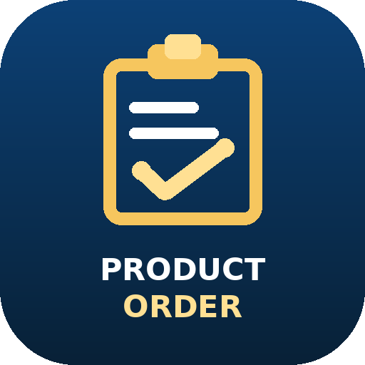

Product Order
Launch the existing order app. Your current Google Apps Script backend and Sheets remain the source of truth.
Open Product OrderThis is an installable launcher prototype. It does not embed the Apps Script app. Install the launcher to test its icon; the Open button launches the existing app separately.